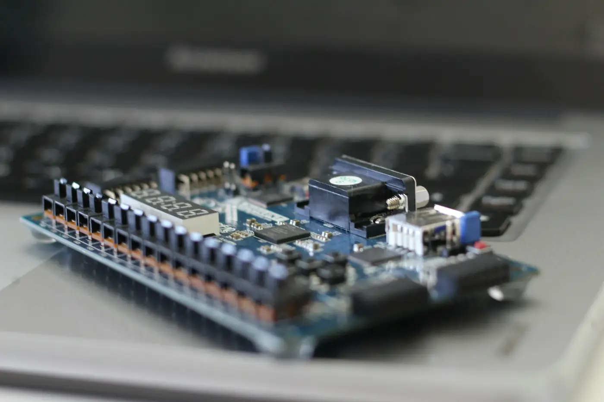

Hardware
8-bit RISC processor on FPGA
An 8-bit processor I designed in Verilog and ran on an FPGA.
- No public link.

By the numbers
- 5pipeline stages
- 16instructions
- 50 MHzon a Xilinx Artix-7
- 22%shorter slowest path
- 40+tests
What I did
- Designed an 8-bit processor in Verilog with a 5-stage pipeline and 16 instructions.
- Ran it at 50 MHz on a Xilinx Artix-7.
- Cut the slowest path by 22%.
- Checked it with 40+ tests.